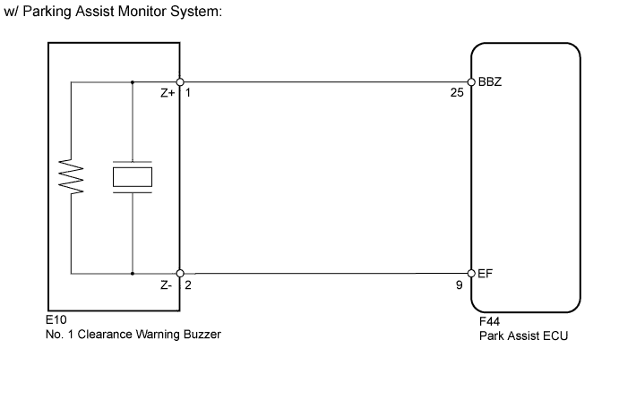
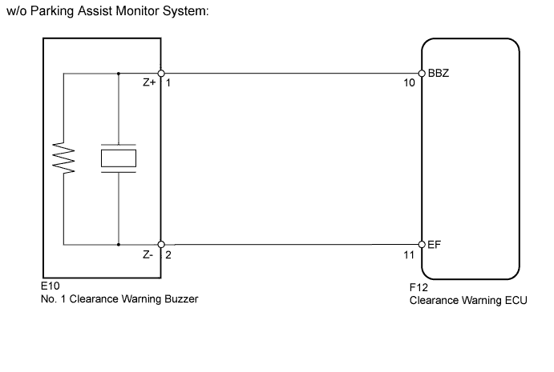
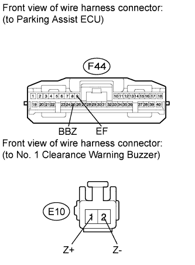
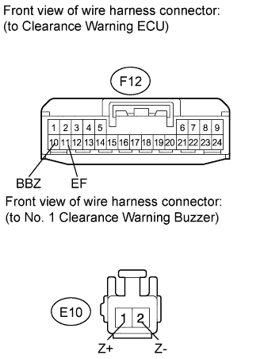

TOYOTA PARKING ASSIST-SENSOR SYSTEM > Clearance Warning Buzzer Circuit |


| 1.PERFORM ACTIVE TEST USING INTELLIGENT TESTER (NO. 1 CLEARANCE WARNING BUZZER) |
Select the Active Test, use the intelligent tester to generate a control command, and then check that the buzzer operates.
| Tester Display | Test Part | Control Range | Diagnostic Note |
| Front Buzzer | No. 1 clearance warning buzzer | Operate or Stop | - |
| Result | Proceed to |
| OK | A |
| NG (w/ Parking Assist Monitor System) | B |
| NG (w/o Parking Assist Monitor System) | C |
|
| ||||
|
| ||||
| A | ||
| ||
| 2.CHECK HARNESS AND CONNECTOR (PARKING ASSIST ECU - NO. 1 CLEARANCE WARNING BUZZER) |
 |
Disconnect the F44 ECU connector.
Disconnect the E10 buzzer connector.
Measure the resistance according to the value(s) in the table below.
| Tester Connection | Condition | Specified Condition |
| F44-25 (BBZ) - E10-1 (Z+) | Always | Below 1 Ω |
| F44-9 (EF) - E10-2 (Z-) | Always | Below 1 Ω |
| F44-25 (BBZ) - Body ground | Always | 10 kΩ or higher |
| F44-9 (EF) - Body ground | Always | 10 kΩ or higher |
|
| ||||
| OK | ||
| ||
| 3.CHECK HARNESS AND CONNECTOR (CLEARANCE WARNING ECU - NO. 1 CLEARANCE WARNING BUZZER) |
 |
Disconnect the F12 ECU connector.
Disconnect the E10 buzzer connector.
Measure the resistance according to the value(s) in the table below.
| Tester Connection | Condition | Specified Condition |
| F12-10 (BBZ) - E10-1 (Z+) | Always | Below 1 Ω |
| F12-11 (EF) - E10-2 (Z-) | Always | Below 1 Ω |
| F12-10 (BBZ) - Body ground | Always | 10 kΩ or higher |
| F12-11 (EF) - Body ground | Always | 10 kΩ or higher |
|
| ||||
| OK | ||
| ||